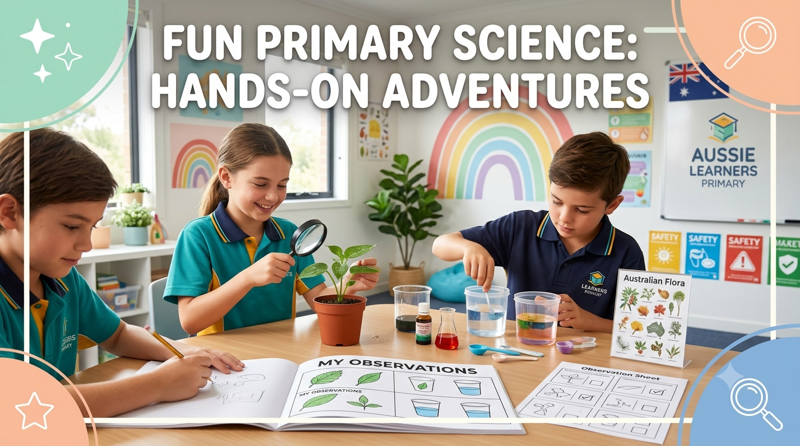

F–6 · Science
7 Free Term 3 Science Activities for Australian Primary Classrooms
Simple, low-prep Science ideas that use everyday classroom or household materials, with a matching free printable worksheet for every year level.

Term 3 can feel crowded. Teachers are balancing new learning, assessment, school events and the everyday work of keeping a class moving. Parents and tutors may also want practical Science activities without buying a kit or preparing a complicated experiment.
The ideas below begin with observation, questioning and explanation. Each activity can be completed with common materials, then extended with a free Aussie Primary Academy worksheet. Choose the activity that suits your students rather than treating the year level as a rigid rule. Explore our full Science worksheet collection.
Safety note: Adapt every activity to your setting, supervise students appropriately and follow your school or service safety procedures. Do not open electrical appliances or connect activities to mains electricity.
A Quick Term 3 Science Plan
Seven focused activities, each linked to a free printable resource.
- Foundation: Living vs non-living hunt
- Year 1: Day and night sky comparison
- Year 2: Push and pull investigation
- Year 3: Shadow tracking
- Year 4: Water cycle observation
- Year 5: Weathering and erosion model
- Year 6: Electrical circuit detective
1. Foundation: Living vs Non-Living Hunt
Practise observing, sorting and explaining.
You need: A classroom, playground or home environment; paper and pencil are optional.
- Invite students to identify several things around them.
- Sort the examples into living and non-living groups.
- Ask students to explain one choice using an observable feature.
- Discuss tricky examples and revise the groups when new evidence appears.
Useful questions: What did you notice? What makes you think it is living? What information would help us decide?
Download the free Foundation Living vs Non-Living Things worksheet
For focused practice, try the Foundation grouping living things worksheet page. You can also explore animal features and plant features.
Explore more on the Foundation Science page.
2. Year 1: Day and Night Sky Comparison
Record patterns and compare observations safely.
You need: Paper, pencils and a safe view of the sky. Night observations can be completed at home with an adult or discussed from prior experience.
- Observe or describe the daytime sky.
- Draw and label what can be seen.
- Compare the drawing with a night-sky observation or shared class image.
- Create a class chart showing similarities, differences and questions.
Useful questions: What changed? What stayed the same? Do we always see the same objects?
Download the free Year 1 Day and Night Sky worksheet
See the full Year 1 day and night sky worksheet page.
Explore more on the Year 1 Science page.
3. Year 2: Push and Pull Investigation
Explore how a push or pull can change movement.
You need: A safe classroom object that rolls or slides, such as a pencil case, soft ball or toy vehicle.
- Predict what will happen after a gentle push.
- Test the push and record the movement.
- Repeat with a different push or a pull while keeping the activity controlled.
- Compare results and describe what changed.
Useful questions: What did the force come from? How did the object move? How could we make this a fairer comparison?
Download the free Year 2 Push and Pull Forces worksheet
Practise further with the Year 2 push and pull forces worksheet page.
Explore more on the Year 2 Science page.
4. Year 3: Shadow Tracking
Collect evidence about how shadows change.
You need: Chalk or removable markers, a fixed outdoor object and a sunny location approved for student use.
- Choose a fixed object and mark the end of its shadow.
- Record the time and describe the shadow's direction and length.
- Return later and repeat the observation from the same place.
- Compare results and discuss the pattern shown by the evidence.
Useful questions: How did the shadow change? What stayed constant? What evidence supports your explanation?
Download the free Year 3 Day, Night and Shadows worksheet
Explore more on the Year 3 Science page.
5. Year 4: Water Cycle Observation
Connect everyday observations with water-cycle processes.
You need: A window, outdoor observation area or examples already visible around the school, such as puddles, clouds or condensation.
- Identify visible evidence of water in the local environment.
- Describe where the water may have come from and where it may go next.
- Connect observations to evaporation, condensation, precipitation or collection where appropriate.
- Draw an evidence-based water journey using arrows and labels.
Useful questions: Where is water stored? What could cause it to change location or state? Which part did we observe directly?
Download the free Year 4 Water Cycle worksheet
Use the dedicated Year 4 water cycle worksheet page.
Explore more on the Year 4 Science page.
6. Year 5: Weathering and Erosion Model
Observe how moving water can change a model surface.
You need: A shallow tray, a small amount of soil or sand, water and a cup. Complete the activity outdoors or protect the work surface.
- Shape the soil or sand into a gentle slope.
- Predict what a small, controlled flow of water will do.
- Pour slowly from one fixed position and observe movement of the material.
- Sketch the model before and after, then separate observation from explanation.
Useful questions: Where was material removed? Where was it deposited? What are the limitations of this model?
Download the free Year 5 Weathering, Erosion and Earth's Surface worksheet
Continue with the Year 5 weathering, erosion and Earth's surface worksheet page.
Explore more on the Year 5 Science page.
7. Year 6: Electrical Circuit Detective
Reason about complete and incomplete circuits without specialist equipment.
You need: The free printable worksheet and pencils. Optional classroom circuit equipment should only be used under appropriate supervision.
- Study a circuit diagram and identify the energy source, pathway and component.
- Predict whether the circuit would work.
- Explain any break or missing connection using precise Science language.
- Redraw the circuit so it forms a complete pathway.
Useful questions: Is there a complete pathway? What evidence supports your prediction? What single change could make the circuit work?
Download the free Year 6 Electrical Circuits worksheet
Work through the Year 6 electrical circuits worksheet page.
Explore more on the Year 6 Science page.
How to Use These Activities Without Adding More Work
Keep the learning goal clear and the recording manageable.
- Start with a prediction. Give students a reason to observe closely.
- Use one recording format. A labelled drawing, short table or three-sentence explanation may be enough.
- Discuss before writing. Oral rehearsal helps students organise scientific explanations.
- Ask for evidence. Encourage students to distinguish what they observed from what they infer.
- Use the worksheet selectively. Complete the questions that match the lesson goal rather than rushing through every page.
Common Science Misconceptions Across These Activities
Research on primary science shows these ideas turn up again and again — worth addressing directly rather than assuming they'll sort themselves out.
"Something is only alive if it moves." Plants confuse the living/non-living hunt because they don't move the way animals do. Focus on the actual criteria — growing, needing food/water, reproducing — rather than movement alone.
"A shadow is a kind of reflection." Shadows and reflections are genuinely different processes, and children often blend the two. Shadow tracking activities work best when you explicitly separate "light blocked" (shadow) from "light bounced back" (reflection).
"Water disappears when it evaporates." Younger students often think evaporation makes water vanish rather than become invisible water vapour still present in the air. Condensation on a cold glass is a simple, visible way to show the water hasn't gone anywhere.
"A working switch means it doesn't matter how the wires connect." Circuit misconceptions are common at any age — many students assume a bulb will light as long as it's connected somewhere in the loop, not realising the circuit needs to be fully closed.
Related Worksheets
Free printable Science resources that pair well with this guide.
-
Foundation · Science
Living Things
Grouping Living Things
Sort and explain living and non-living things.
Download Free Worksheet → -
Year 2 · Science
Forces
Push and Pull Forces
Investigate how pushes and pulls change movement.
Download Free Worksheet → -
Year 4 · Science
Earth Science
The Water Cycle
Observe and explain evaporation, condensation and precipitation.
Download Free Worksheet → -
Year 6 · Science
Physical Science
Electrical Circuits
Identify complete and incomplete circuits with clear diagrams.
Download Free Worksheet →
Explore More
Jump straight to the matching subject hub or more guides.
-
All Years · Science
Explore Science Worksheets
Browse the complete Science collection across Foundation to Year 6.
Science Subject Hub → -
All Years · Worksheets
Explore All Worksheets
Browse the complete collection across every year level and subject.
All Worksheets → -
Blog · Guides
More Learning Guides
Practical teaching and parent guides with free printable links.
All Blog Guides →
You May Also Like
Related guides for Australian primary families and teachers.
-
Foundation · All Subjects
Foundation · Parent Guide
Free Foundation and Prep Worksheets for Australian Children
Key early-learning skills plus printable Maths, English, Phonics and Science resources.
Read the Guide → -
Year 3 · Maths
Maths · Skills Guide
Best Year 3 Maths Worksheets for Australian Students
Place value, fractions, multiplication, money and measurement with free printable worksheets.
Read the Guide → -
F–6 · Reading
Reading Skills Guide
How to Improve Your Child’s Reading Skills at Home
Simple strategies for reading confidence, vocabulary and comprehension.
Read the Guide →
Frequently Asked Questions
Do I need to buy a Science kit?
No. These activities use observation, discussion, common materials or a free printable worksheet. Use only materials that are already suitable and available in your setting.
Can families use these activities at home?
Yes. Families and tutors can adapt the activities for one child, provide appropriate supervision and use the matching worksheet for follow-up practice.
Are the worksheets free?
Yes. The linked Aussie Primary Academy worksheets are free to download and print, with no sign-up required.
Are these complete Science lessons?
No. They are flexible activity starters and supplementary worksheets. Teachers should adapt the learning intention, discussion, safety controls and assessment to their students and program.
Do Australian school term dates match nationally?
No. Term dates differ between states, territories and school sectors. The activities can be used whenever they fit your Science program, not only during a particular week.
Keep Learning
Explore more free Australian primary worksheets, activities and teacher resources aligned to the Australian Curriculum.